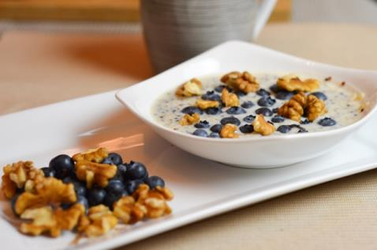

Blueberry Breakfast
Nutritional Facts (per serving)
Calories 268 | Total Fat 9.1g | Saturated Fat 2.2g | Carbohydrates 37g | Fibre 4.6g | Protein 10.3g
Serves: 4
Ingredients
- 150g quinoa
- 400ml semi-skimmed milk
- 100ml water
- 1 tsp. pure vanilla essence
- ½ tsp. ground cinnamon
- 200g cup blueberries
- 30g walnuts, chopped (optional)
Method
Step 1: Put the water and milk in a saucepan and bring to the boil.
Step 2: Add the quinoa and simmer over a medium heat for 15 minutes.
Step 3: Strain the quinoa to remove any excess milk and water.
Step 4: Combine the cooked quinoa, vanilla essence, and cinnamon.
Step 5: Divide this mixture into four breakfast bowls.
Step 6: Top with blueberries and walnuts, then enjoy!